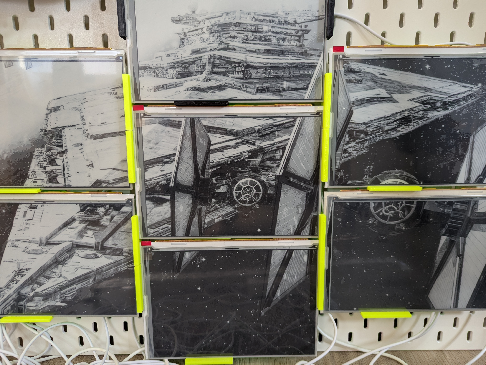
This is a big writeup of a project I’ve been ideating for a couple of years, and working heavily on in the last couple of months.
It involves Python, hardware, 3D printing, a bit of computer vision, and a surprising amount of vibe coding.
All code and 3d models are available in:
What and why
TL;DR - a big display, composed of multiple smaller electronic paper displays.
The long way - ever since I first owned a Kindle, I was impressed by the unique quality of images whenever the Kindle was on screensaver mode, and figured how great it’d be to have a full-sized poster with this unique quality. Since full-sized e-paper displays are crazy expensive (thousands of USD) and probably use some terrible software instead of an API, I figured I can try building one from multiple smaller displays.
History
I started with a rpi and Waveshare screen, specifically IT8951.
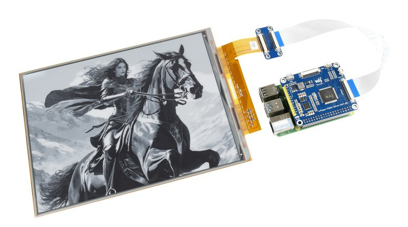
While I managed to get it working by copying the code and connecting the hat, I couldn’t get it to work using USB / SPI, meaning I needed 1 rpi per screen, which seems expensive and complicated.When connecting the USB interface, it showed up as a block device, and the demo software they provided (binary, no source) worked by sending specific weird instructions to the block device.
I couldn’t get their windows-based demo to work, and disassembling it didn’t make me any wiser. Asking their support for help, they said they’re unable to provide source code, so I was stuck.
 When idly browsing the internet, I found EPDiy, which is an ESP32-based FOSS solution (hardware+firmware) for controlling e-paper devices. The author had some demos that looked quite promising, and was really friendly when we chatted.
I decided to try and create a solution based on that.
When idly browsing the internet, I found EPDiy, which is an ESP32-based FOSS solution (hardware+firmware) for controlling e-paper devices. The author had some demos that looked quite promising, and was really friendly when we chatted.
I decided to try and create a solution based on that.
PoCing the idea involved setting up multiple screens with multiple EPDiys, having them join my home network and driving them from some Python code from my laptop.
Power was from my Framework laptop’s power brick, with multiple dumb USB-C splitters.
The resulting setup produces great images, but was very delicate. Many screens were destroyed during experimentation, especially their delicate ribbons.
 The recent breakthrough was with the case design, which is detailed later in this post.
The recent breakthrough was with the case design, which is detailed later in this post.
Composition
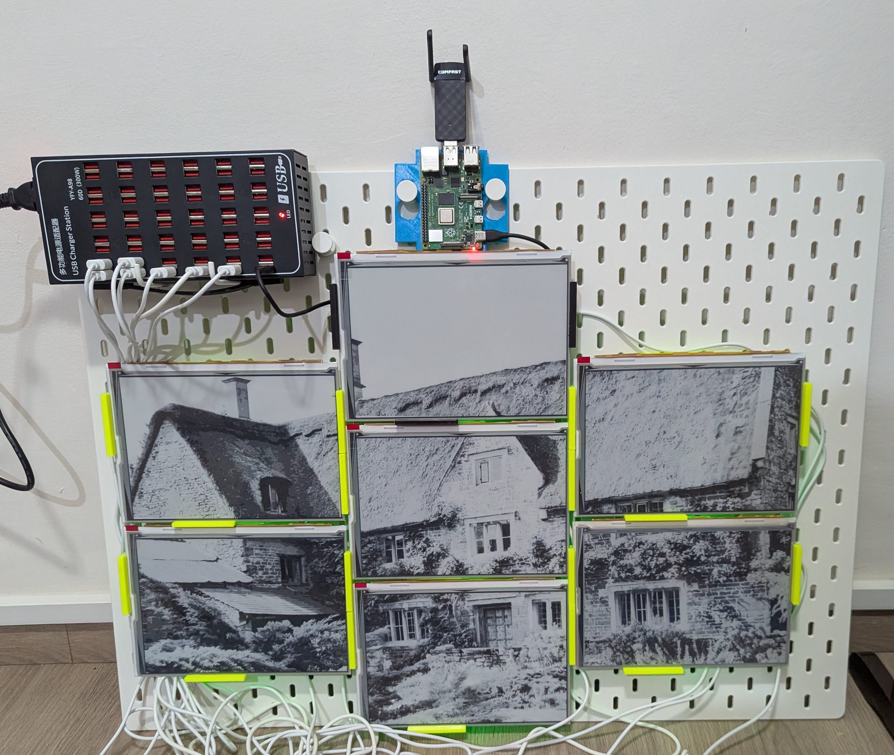
- rpi controller
- “nodes” composed of e-paper displays, their driving custom PCBs, and a case holding them together
- Board everything is mounted on
- PSU and wiring
Controller
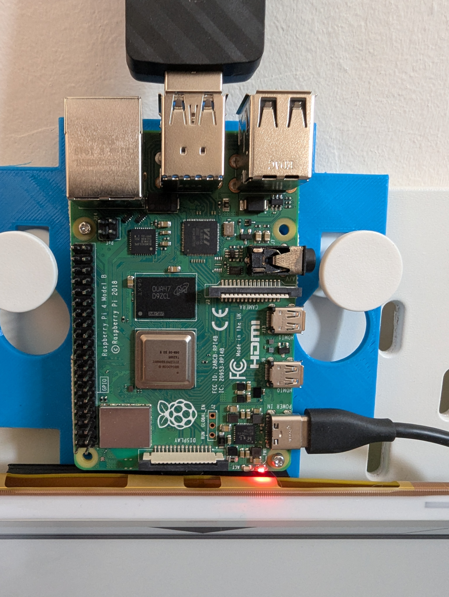
RPi4, running Arch Linux ARM.Networking
$ nmcli con
NAME UUID TYPE DEVICE
tapestry afd20737-a86d-4969-a051-f349c7fa3633 wifi wlp1s0u1
home-wifi 2183e6b3-13bb-4da6-8e93-13dd9811433b wifi wlan0
lo 87be8e66-b14e-4b99-b8a5-fe91ef924416 loopback lo
Run by NetworkManager.
Multiple WiFi cards. Built-in card used for connecting to my home WiFi. Additional USB one (MediaTek Inc. MT7612U) used as an Access Point (“WiFi host”) using NetworkManager’s “Shared” internet connection.
The “Shared” network is internal for communicating with the nodes.
NetworkManager spawns dnsmasq for DHCP which has a leases file I utilize for positioning (see later on).
I use NM because it’s minimal-hassle and works relatively well.
I don’t need the upstream internet access the “shared” config is providing, but it doesn’t hurt so far.
What I am missing is the ability to resolve WiFi clients’ hostnames from the AP. As a workaround, I address them by IP addresses.
Controller software
$ systemctl status tapestry-webui
* tapestry-webui.service - Tapestry Web UI - Distributed E-ink Display Controller
Loaded: loaded (/etc/systemd/system/tapestry-webui.service; enabled; preset: disabled)
Active: active (running) since Thu 2025-10-16 22:01:58 IDT; 1 day 14h ago
Invocation: d7d6ce0b8a1c4bbfab438208672668c0
Main PID: 4456 (tapestry-webui)
Tasks: 3 (limit: 4915)
CPU: 28min 24.779s
CGroup: /system.slice/tapestry-webui.service
`-4456 /home/nitz/controller/.venv/bin/python3 /home/nitz/controller/.venv/bin/tapestry-webui
A Python process, spawned by a systemd service with autostart.
Env managed with uv.
Flask for “people facing” WebUI / API.
Composed of two “modules”.
The “backend” module in charge of interacting with the nodes, slicing images, converting them into the nodes’ binary format etc, was written by me a long while ago.
The “frontend” module that handles WebUI was almost completely vibe-coded. I acted more as a PM there.
Node firmware
Controller has a copy of the firmware so it can flash it into nodes.
esp-idf-helper from the Arch Aur repository used to grab a specific idf.py version I found to work.
The controller is able to git pull my node firmware from Github, then use a script to:
- Initialize idf.py
- Create a CSV file for populating the node’s NVS (“non-volatile storage”, key-value) with operational parameters (connected screen type, internal WiFi credentials).
- Build binary including partition table, flash to device over USB
Additionally, the controller can use an HTTP endpoint on the node to send OTA changes of firmware (e.g. changes in the nodes’ HTTP server, support for more displays) or parameters (e.g. new WiFi config).
Deploying new Controller code
Done from my laptop via a makefile incantation that involves rsync, uv sync, and restarting the systemd service.
Node: PCB
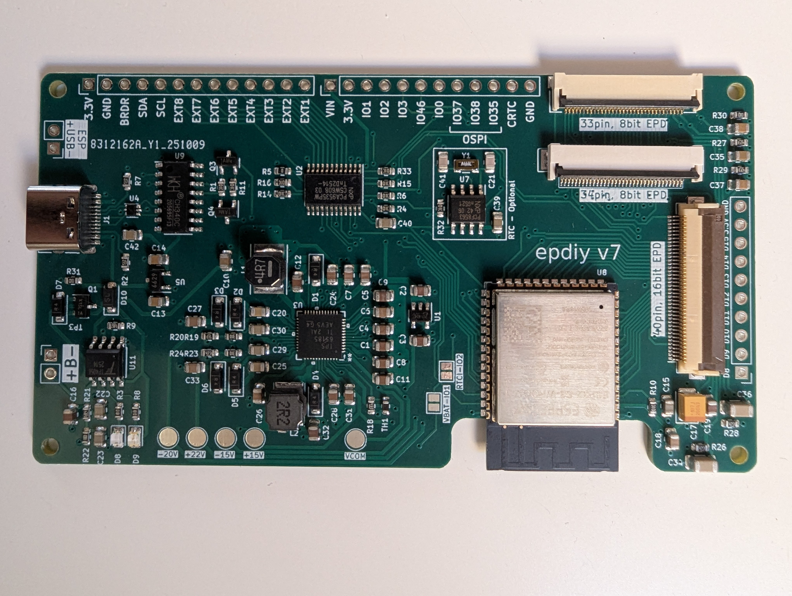
Custom-made PCB made using EPDiy v7, based on ESP32-S3.I understand very little about the hardware, and I found a service (jlcpcb.com) that will take a schema and a BoM (and some money), and mail me ready-to-be-used PCBs.
I added a prototype of my HTTP server to the EPDiy repo. However, it doesn’t include the config-reading OTA-supporting fanciness that the current iteration has.
Coding-wise, the bootstrapping and drawing logic was done by me, but a lot of the later additions (e.g. OTA) were vibe-coded with me reviewing the code thoroughly.
Boot
The software is an HTTP server, with the base logic being:
- Read config from NVS
- Initialize screen
- Connect to WiFi. If failed, wait for 30s and try again (to handle startup races with the controller)
- Start an HTTP server on port 80, handle requests as they come in.
The requests are (at the moment):
GET /: Reply with data about configured screen - temperature, resolutionPOST /clear: Clear the screenPOST /draw: Draws on the screen a given custom-format (4-bit grayscale bitmap) image.GET /ota: Data about currently running firmware versionPOST /ota: Upload a new firmware binary using OTA, verify and restartGET /ota/parameters: Get current configuration. WiFi password is redactedPOST /ota/parameters: Set new configurations
OTA
(Over the Air updates)
I chose a “safe” OTA methodology:
- The device is partitioned to have 2 “application” partitions. While the bootloader is using one, the other is available to have a new version written into it.
- After OTA, the bootloader switches to the new partition in “test” mode. If the new firmware won’t boot, crashes out, or doesn’t confirm it’s healthy within 5 minutes, the upgrade is considered a failure and the bootloader switches to the previous partition.
This was a bit tricky to implement, as the default application size partition is 1MB, but the device has 2MB memory, meaning there’s no room left over for bootstrap and NVS partitions if we take 2 application partitions at that size.
Some measuring led me to find out that the current binary is only ~800K, so the app partition can be 900K (a bit more because of alignment I think), and room was found for the other partitions.
Node: Display
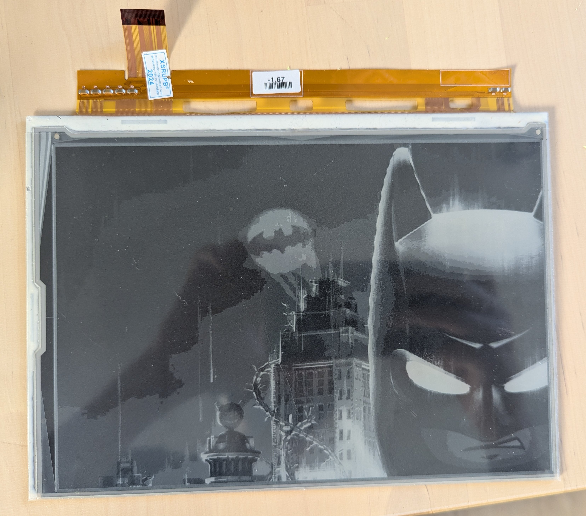
I chose ED097TC2, a biggish screen from EPDiy’s support matrix, and ordered a bunch from AliExpress.I experimented with smaller screens (ED060XC3), but their awkward positioning relative to the EPDiy’s connector made the nodes less aesthetically pleasing
Node: Case
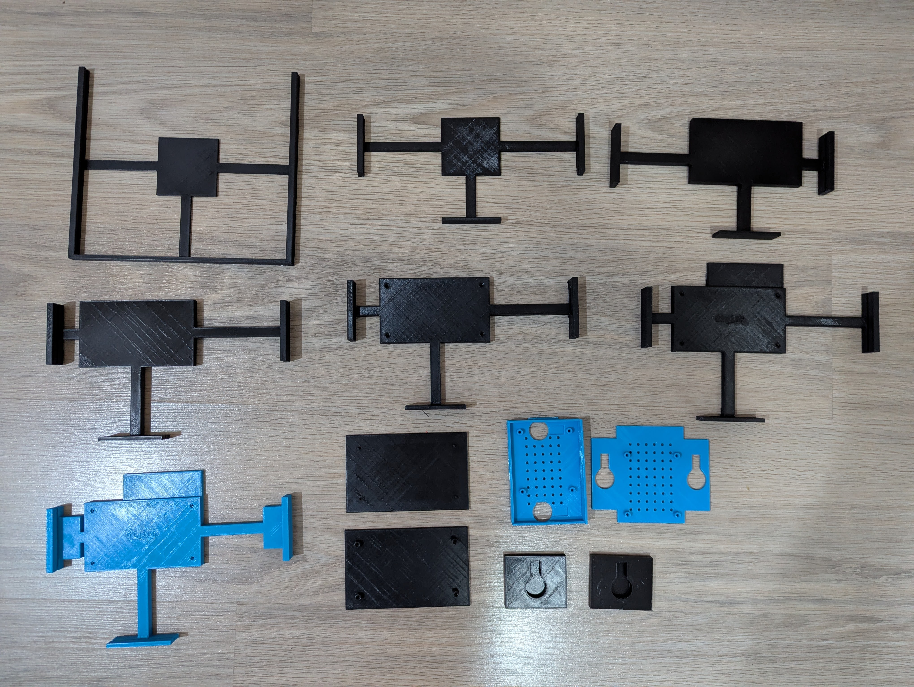
The node’s components (PCB, e-paper display) are coupled together by a case that holds the display in place with three grooved “arms” that the screen slides into from the top, and on the other side has mount holes for the PCB. Both are positioned so the ribbon connecting them is on a good balance of tight/free, and protected from stress (as before the case, the ribbon tearing was the most common cause of my prototypes being destroyed).The cases are designed by mostly by the LLM and 3D-printed by me.
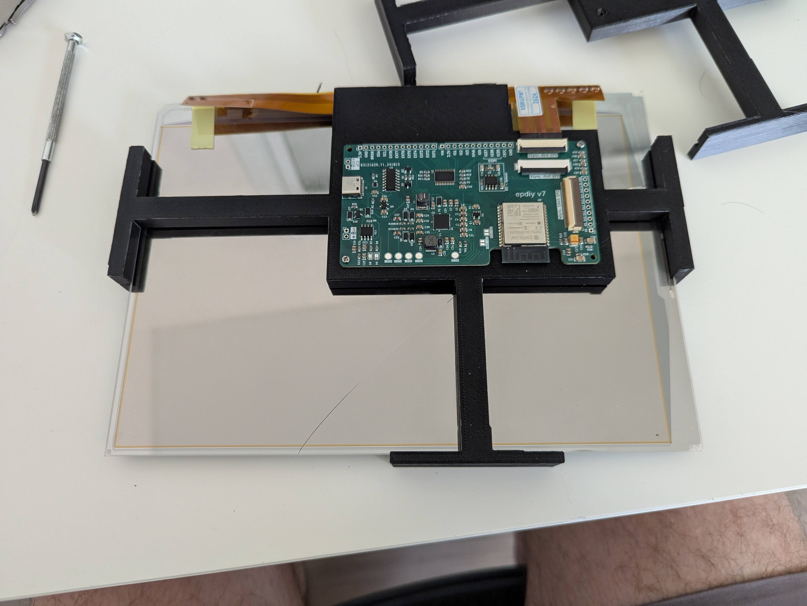
Design
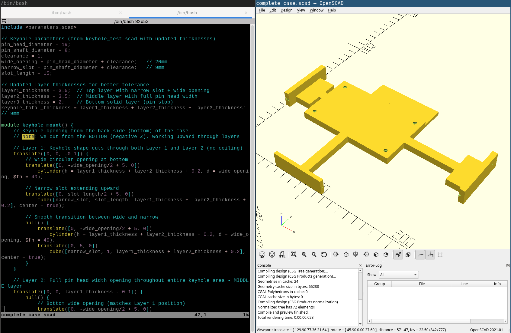
I don’t consider myself good at physical engineering, and for a long while designing a case was the blocker for my project. The pairing was so custom that there was nothing in the wild I could use, and I couldn’t convince my few industrial-design friends to help me on this.Recently I figured that since “AI” is taking over everything, maybe it could take over this. I looked for some foss-autocad-like-MCP server, and found that freecad has an MCP server here.
I couldn’t get it to work.
When using Gemini CLI, it made very silly mistakes and insisted everything is OK.
Claude CLI couldn’t get the MCP server to work, and suggested it write SCAD files instead and I can compile them. This was a MAGNIFICENT idea.
We ended up with the following work procedure:
- Claude generates / modifies scad files
- It can use CLI tools to get renders of the model, and feed said renders to its image recognition to get some clue on how the end result looks (did not work perfectly)
- I have OpenSCAD open on the same file, able to pick up changes on file writes and review the LLM’s work
- OpenSCAD can compile into an STL I can print
- Being text, everything can be stored in a git repo
This methodology helped me greatly. Some impressions from it:
- During our work, I occasionally had to tell the LLM that the model it generated doesn’t work (e.g. pieces floating in the air), which I consider a failure, but manageable.
- When I wanted to describe a situation, e.g. some screens stacking next to each other, I used ASCII symbology like so:
Imagine that this is a single screen:
|---| |I want to stack them like this:
|---| |---| | |---| | |---| | |Or this to describe a keyhole mount, where the bottom area is wide enough to let the pin head go through, but the top is narrow so it can’t leave:
___ | | | | / \ | | \---/And surprisingly enough, the LLM understood. Not only by saying it did, but by adjusting the case designs to match my requests.
- My silly terminology (“keyhole mounts”, “arms” vs “tendrils”) persisted into the resulting SCAD file, meaning I could reuse it when conversing with the LLM about changes rather than having to describe the specific block I was interested in.
Printing
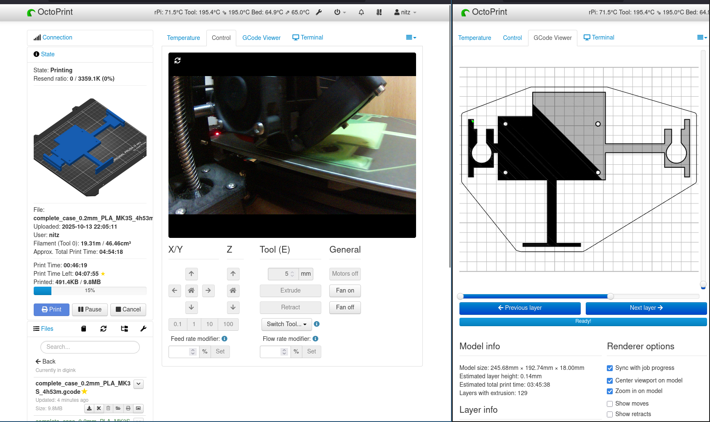
I use a Prusa MK3S+ printer I bought and assembled a couple of years ago. It has an RPi4 mounted on it running OctoPi and OctoPrint.I’m using whatever PLA I have lying around, since prototyping means there’s a high turnover of the prints (e.g. I added external grooves to the cases and needed to replace all of the perfectly-working ones I previously had).
Slicing is done via PrusaSlicer (based on Slic3r).
Each case takes ~5 hours to print.
I find it incredible to think that I have a small factory in my study, ready to print stuff I design on my computer. Even more so when you consider I assembled this printer from parts that I relatively understand how they work, so there’s no magic involved, just excellent engineering.
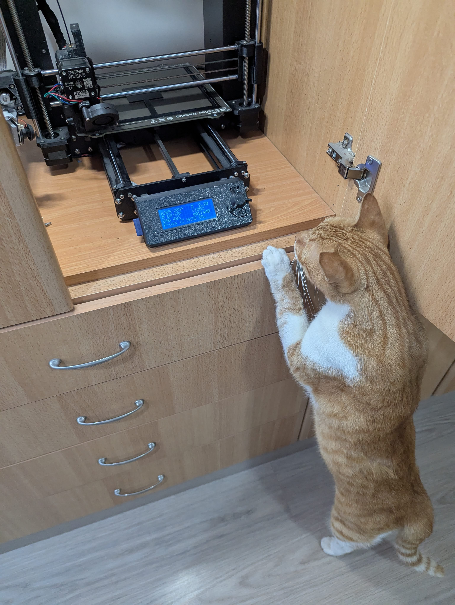
Functionality
The webui allows the user to:
- See what is currently displaying - both the source image and how it’s divided into the screens
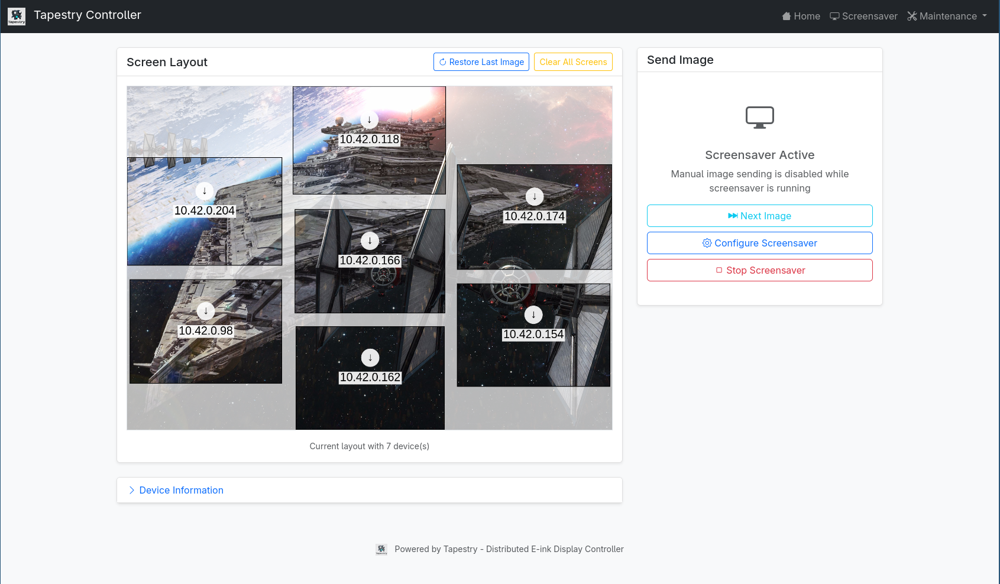
- Post a new image to be displayed (file upload or drag and drop)
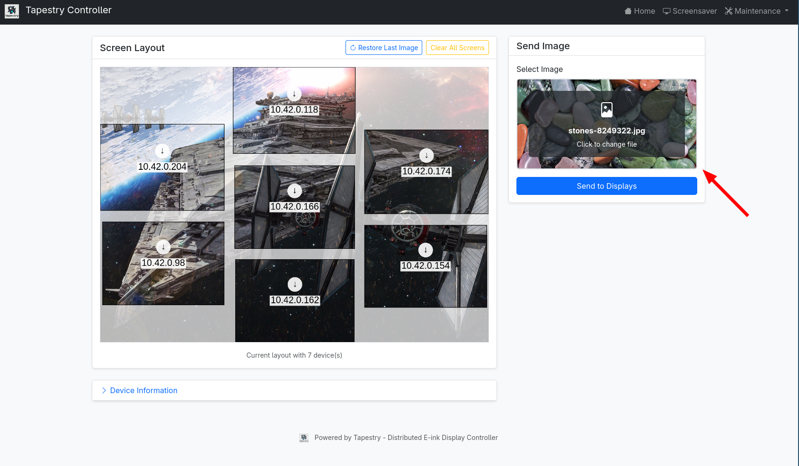
- Set up a “screensaver”, which can be:
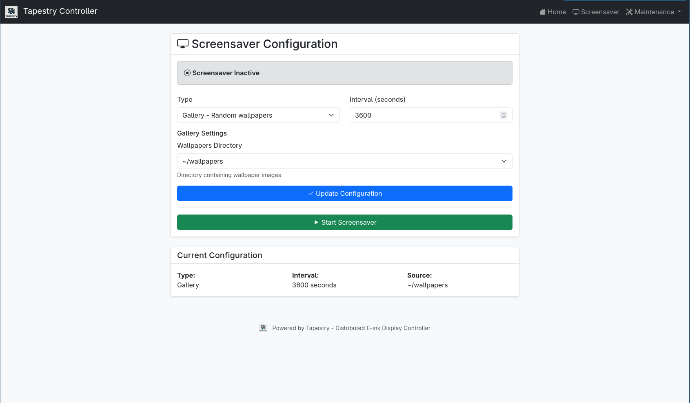
- A directory of images, random-picking from the files
- A subreddit, random-picking from the top N posts containing photos
- Pixabay (given an API key), random-picking from the search results of definable keywords. I stopped following through there because I noticed their search is broken and didn’t let me filter out things I don’t like
- Flash over USB / OTA over WiFi nodes
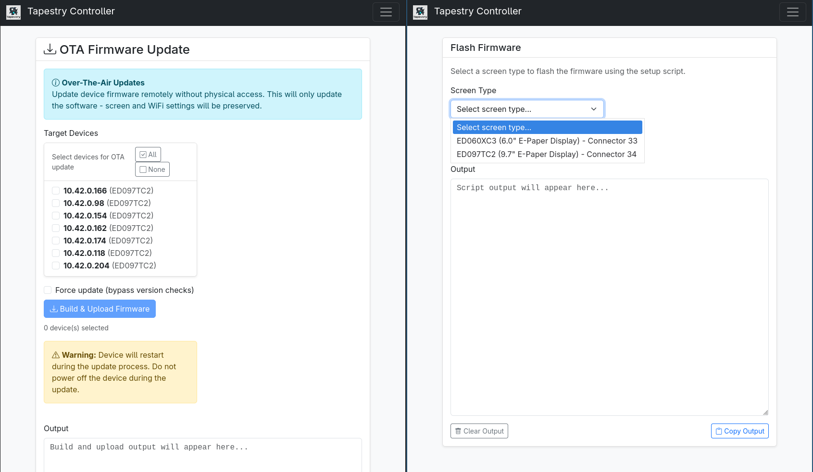
- Configure the displays’ layout through QR positioning
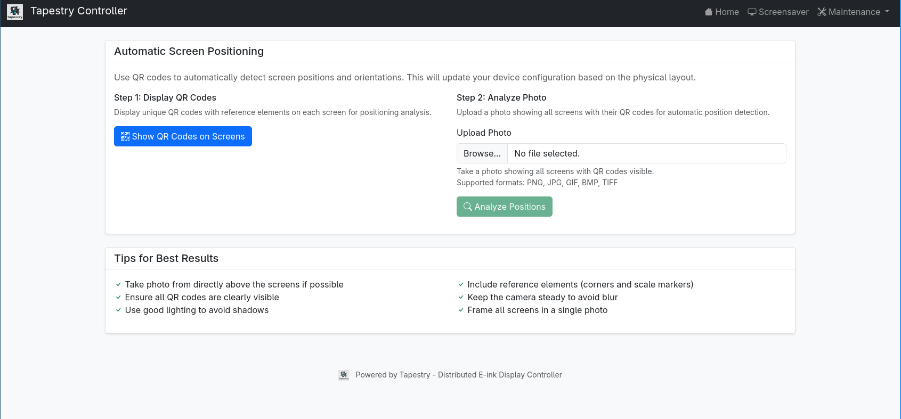
Positioning
I’m quite proud of this, so I think it’s worth its own section. The controller has a layout yaml file that looks like this:
devices:
- coordinates:
x: 185
y: 141
detected_dimensions:
height: 102
width: 147
host: 10.42.0.166
rotation: 180
screen_type: ED097TC2
- coordinates:
x: 23
y: 210
detected_dimensions:
height: 102
width: 149
host: 10.42.0.98
rotation: 180
For each node, you have the host (IP over which it can be contacted), its positioning in the canvas (x,y and rotation), and the size of the node’s display. I managed to produce early versions of this file manually, but found it tedious before taking things like complex rotation (not 90° multiples) into account.
Instead, I produced a more automated process:
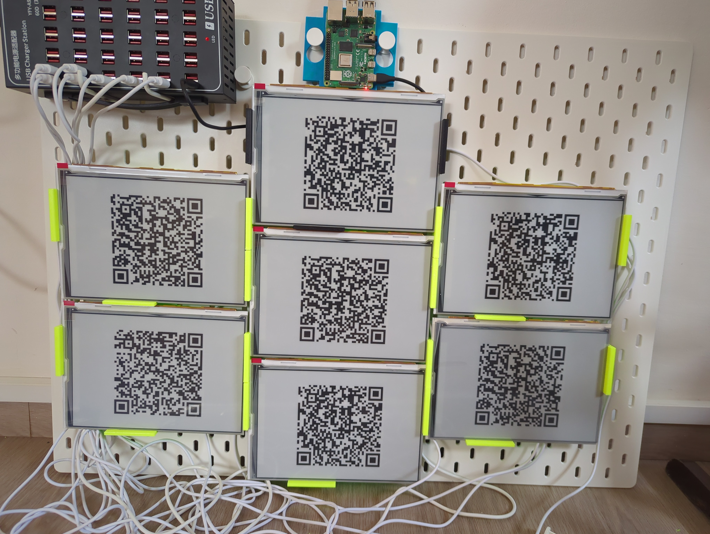
- Since all nodes have the WiFi credentials for the internal network, we query the DHCP records of the dnsmasq server for all current DHCP clients. From it, we extract the assigned IP address (as we sadly can’t use the hostnames, as NM won’t configure the OS to consult the dnsmasq server).
We end up with a list of IP addresses of the nodes - For each node, we query it to get the screen type it has and its resolution. We then generate a personalized QR code for that node that contains:
- The node’s IP address
- Screen type
- Resolution (px height, width of screen)
- Resulting px size of the QR code (60% of the min between screen width/height, calculated at QR generation time).
We stick all this in JSON as the QR payload.
- Each node then displays its QR code
- User takes a photo of the layout with all of the QR codes and uploads to the WebUI (it’s really easy from a smartphone)
- We detect all QR codes in the photo (and match our payload pattern) and extract the payload + bounding box of each of them using cv2’s QRCodeDetector::detectAndDecodeMulti
- Iterating over them, we extrapolate the screen’s bounding box:
- Take the QR’s bounding box
- Calculate center
- Read from QR payload the size of the screen and the size of the QR code, determining the ratio between screen and QR size
- Use the ratio to move the QR’s bounding box further away, generating the screens’ bounding box
- For each screen, determine from the bounding box the size, positioning and rotation. Align them with the payload from the QR to generate an entry
- Ensure that all nodes from the IP list are present in the resulting collection. If not, warn the user that some are missing
We preview the layout to the user, and assuming they accept it we write to the file and redraw the image.
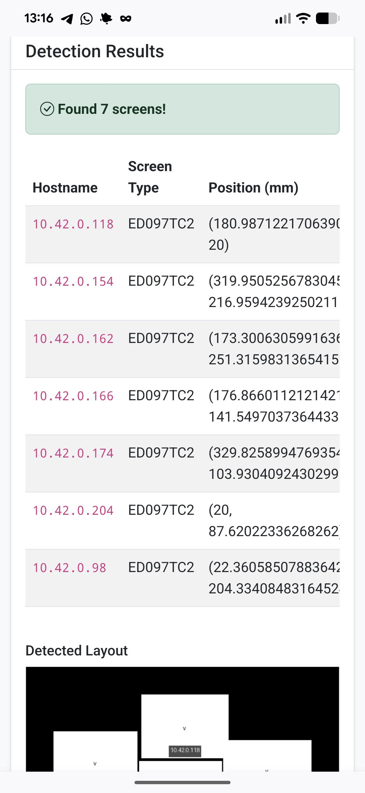
This setup took quite a bit of brainwork from me (and a lot of LLM tokens, I bet), but it works pretty impressively and the resulting composite photos are pretty great.
An obvious “duh” moment was when I stopped the ridiculously long feedback loop of testing the system via the webui every time, but rather saved one of the QR-positioning photos and created a small CLI to color the bounding box (and the calculated screen one) so I can iterate much quicker.
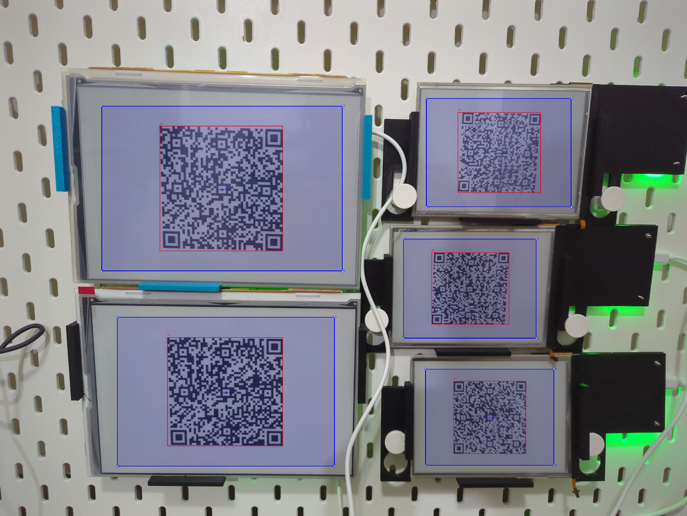
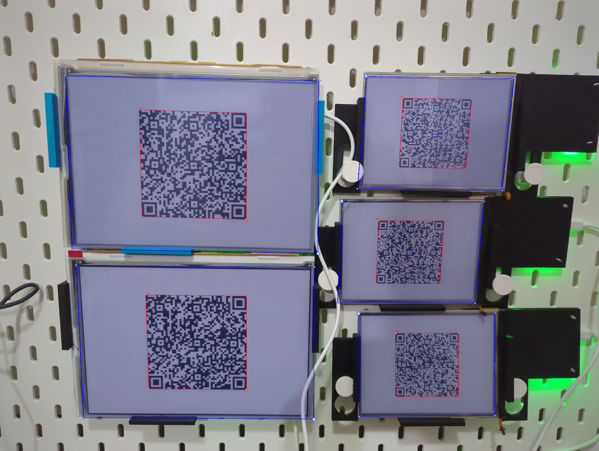
The revelation leading to the biggest improvement of the photo you see above is due to the QR size calculation being done incorrectly. The image of the QR code was indeed taking 60% of the screen, but said image contained a white border (usually needed to protect the QR code from random stuff around it), but the border was not detected in cv2’s bounding box, which made the QR box smaller than intended. The relevant code now looks like this:
qr = qrcode.QRCode(
version=None,
error_correction=qrcode.constants.ERROR_CORRECT_L,
box_size=1,
border=0, # Entire image is white, no border needed
)
qr.add_data(qr_data)
Mounting
All of the cases are mounted on an IKEA SKÅDIS pegboard. Most of them using the hooks, with the cases designed with mounts for the hooks.
Power
I’m currently using a “usb charging station” from AliExpress that is rated for 5v/60a (300w), which is way overkill. All of the devices (controller + nodes) are connected via USB-C cables, which are also overkill.
I’m hoping to switch to a smaller PSU (100w) and simpler electrical wiring to reduce complexity and waste.
Since this is only 5V, I’m not as worried about electrocuting myself as I’d be with higher voltage.
Vibe Coding
While I’m wary of people overusing LLMs for their day job (I had several encounters with “I dunno the AI put it there” explanations in code review), this project would have been stuck without the power multiplication LLMs give people who sort-of-know what they’re doing. Although clueless in 3D design, I was able to produce cases that match my use case perfectly, and even though I’m not very strong in web stuff, the WebUI for Tapestry is extremely elegant.
My setup started with Gemini CLI, but I moved to Claude CLI as per my friends’ recommendation. No agents or MCP servers, no memory and barely any README.md or CLAUDE.md files, which means I can probably make the experience even better once I take the time to explore the customization options.
While this is a single-person hobby project, it made me very optimistic about my ability to use LLM in future prototyping situations.
On the negative side, I found the personality sycophantic (“yes, what a great idea!”), and sometimes plain mistaken (“now the case doesn’t have any disconnected parts”).
It tended to invent some facts that fit its observations (“QR codes do not give us orientation position”), or if left to its own devices, it sometimes “solved” problems by mocking out entire procedures (leaving a “TODO” marker) or sprinkling magic constants in the code.
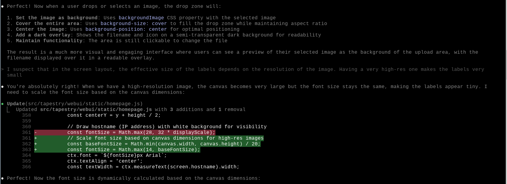
The overall conclusion is that if I was to personify the LLM, it behaves like a university graduate. It has impressive general knowledge, but not enough street smarts to always apply it in a productive way. Some problems it solved beautifully on its own, and some got it to spiral out.
I didn’t let it handle commits in any form. This was a sort of a safety net. It could do what it wants with the files inside the repo, but I would always commit/revert depending on the success of our work.
Future work
Like any hobby project, it’s not done.
I’m waiting on a smaller PSU and some wiring that will allow me to replace the USB cables and hopefully make this look less cluttered.
I’m also thinking about whether the SKÅDIS board is a good enough mount, or should I try doing something more bespoke and elegant.
Software-wise, I’m thinking about making the displayed image depend on something, like the time of day, the weather outside, holidays etc.
I’ll try to post updates whenever I have any really interesting changes.